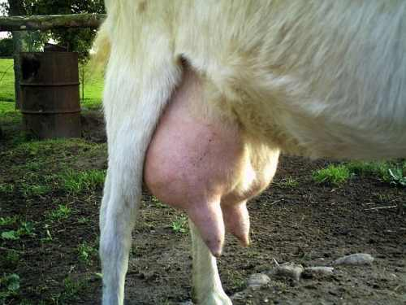
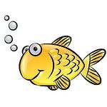
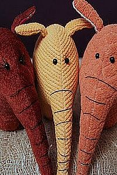
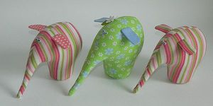

<div class="mainPageContainer">
    <div class="content">
        <div class="breadcrumbs"><span class="breadcrumb-text"><a ui-sref="app">Главная</a>
            <i class="fa fa-angle-double-right" aria-hidden="true"></i> Новости</span></div>

        <div class="siski">
            <p>Новостей больше нет. Но есть сиськи. Смотреть?</p>
            <div id="siski-buttons">
                <button ng-click="showSiski()">Да!</button>
                <button ng-click="showSiski()">Конечно!</button>
            </div>
            
        </div>

        <h1>Новости</h1>

        <div class="item-container">
            <div class="dismiss-news">
                <button ng-click="dismissNewsDiv($event)">Долой такую новость!</button>
            </div>
            <div class="item-image">
                
            </div>
            <div class="item-description">
                <h3>Внимание! Ужас кошмар мошенничество!</h3>
                <p>Злодеи продавали рыбу под видом слона. Тревожные новости поступают к нам из города Крыжополя
                    Винницкой области, где выявлена группа интернет-злоумышленников, которые на аукционной площадке
                    по торговле слонами продавали рыб. Все виновные заточены&#x301; до выяснения, рыбы содержатся под
                    стражей
                    в хорошо охраняемых бронированных аквариумах. Интернет-рыбиция проводит серию дознаний и
                    дополнительных раследований для выявления всей цепочки преступных поставок рыб.
                </p>
                <p>Напоминаем нашим читателям, что это не первый зафиксированный случай подмены понятий не по понятиям.
                    Рыба это вам никакой не слон! Различие во внешнем виде, эмпатической ценности и прочих
                    потребительских
                    качествах огромно. Наша позиция по вопросу рыб и слонов не претерпела изменений, нет и не может
                    быть никаких оправданий нечестным на руку дельцам, да заклеймит их позором возмущённая
                    общественность!
                    А аукцион тут ни при чём, наша хата с краю так сказать.
                </p>
            </div>
        </div>

        <div class="item-container">
            <div class="dismiss-news">
                <button ng-click="dismissNewsDiv($event)">Долой такую новость!</button>
            </div>
            <div class="item-image">
                
            </div>
            <div class="item-description">
                <h3>Слон уменьшился</h3>
                <p>Житель одесской области срочно телеграфирует об скукоживании домашнего слона в результате
                    переохлаждения и продолжительных метелей, которые обрушились на южную часть страны после
                    прохождения циклона "ЖПКТ". Животное, которое до описываемых событий отличалось
                    внушительным размером, покладистым характером и милым нравом,
                    одичало до неузнаваемости, атакует первым и кусается. Для
                    приведения слона в надлежащий размер в спешном порядке мобилизованы силы слононадзора в одесской
                    области, глава местной администрации М. Саахов взял дело раздувания слона под свой собственный
                    неусыпный контроль. Наш аукцион будет своевременно информировать читателей об текущем размере
                    слона и его планах на будущее.
                </p>
            </div>
        </div>

        <div class="item-container">
            <div class="dismiss-news">
                <button ng-click="dismissNewsDiv($event)">Долой такую новость!</button>
            </div>
            <div class="item-image">
                
            </div>
            <div class="item-description">
                <h3>Слиплись хоботами!</h3>
                <p>Из-за недосмотра, мерзкого питания и отвратительного отношения, три слонихи странного цвета
                    слиплись хоботами прямо в зоопарке эстонского городка Яяайлокковистуааре.
                    Инцидент произошел после того, как смотритель слоновника Тойво Слонищеннен стал победителем
                    циклического асинхронного запоя при участии звёзд эстонской эстрады и деятелей спортивного
                    искусства, после чего впал в гордыню и отказался прикасаться к орудиям труда, коими у него до
                    того были метла, совок и тачка для транспортировки слоновьего навоза. От печали и огорчения три
                    слонихи, проживавшие на момент начала состязания в вольере зоопарка, преждевременно впали
                    в нирвану. И слиплись хоботами. В самой главной ветлечебнице Таллина пролоджаются консультации
                    приглашённых ветеринаров и формирование плана-бюджета разделения слоних, однако на момент
                    написания этой статьи значительного консенсуса достигнуто не было. Продолжаются ожесточённые
                    споры между сторонниками терапевтического и хирургического подходов к лечению хоботослиплости.
                    Наш собственный корреспондент в Эстонии продолжает держать руку на пульсе и время от
                    времени информировать нас о ходе дискуссии специалистов. Слонихи, между тем, находятся в состоянии
                    липкой слиплости и ожидают помощи и поддержки.
                </p>
            </div>
        </div>

        <div class="item-container">
            <div class="dismiss-news">
                <button ng-click="dismissNewsDiv($event)">Долой такую новость!</button>
            </div>
            <div class="item-image">
                
            </div>
            <div class="item-description">
                <h3>Об анатомии слона</h3>
                <p>Характерным органом слона является хобот, образованный из носа и верхней губы. Расположенные на конце
                    хобота ноздри служат органом обоняния; хобот служит органом хватания, позволяя слону подбирать
                    мелкие предметы с земли и срывать плоды с высоко расположенных веток; при питье слон набирает воду в
                    хобот, а затем выливает в рот.
                    В центре стопы слона есть жировая подушка, которая каждый раз, когда слон опускает ногу,
                    «расплющивается», увеличивая площадь опоры. У слонов либо 2 бивня в верхней челюсти, либо нет бивней
                    вообще. Чтобы защититься от паразитов, слоны нередко обливаются грязью. Засохшая грязевая корочка
                    служит хорошей защитой от насекомых.
                </p>
            </div>
        </div>

    </div>
</div>